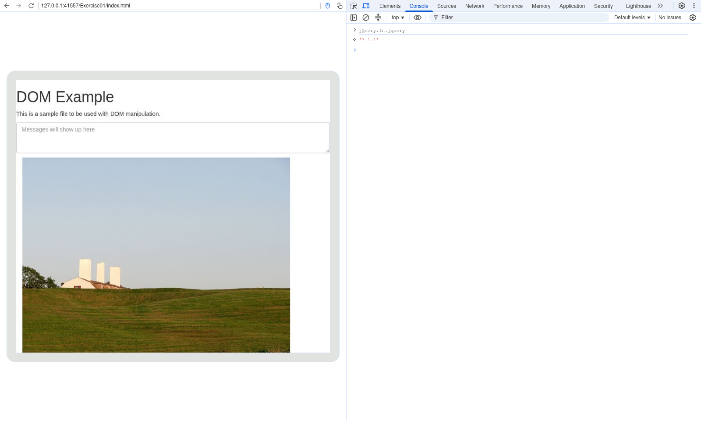
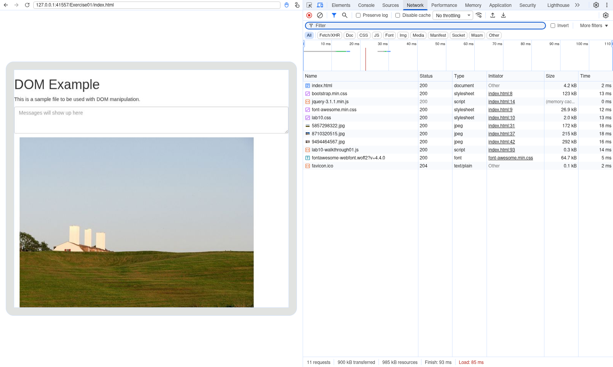
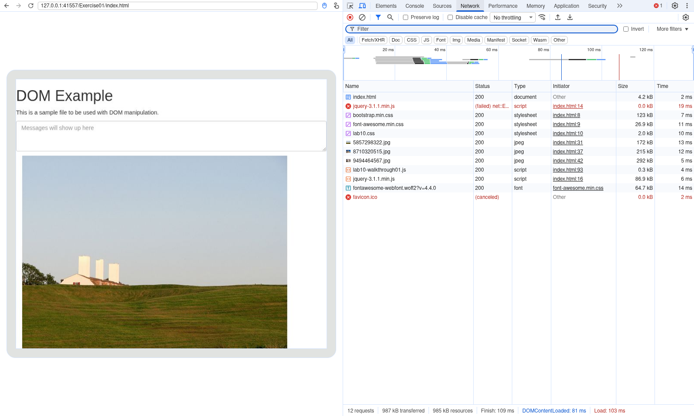
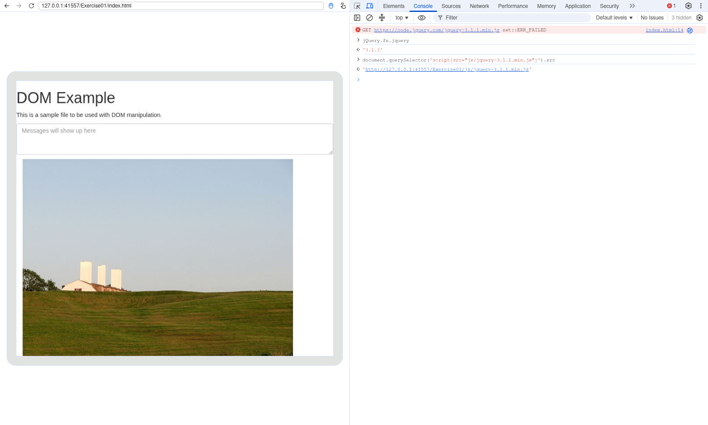

Ảnh minh chứng Exercise 10.1
Mở bài thực hành · Về Lab10

jQuery tải từ CDN; Console xác nhận phiên bản 3.1.1.
Network ghi nhận jquery-3.1.1.min.js từ code.jquery.com được tải thành công.
Chủ động chặn CDN để thử fallback: bản jQuery cục bộ vẫn tải được.
Console xác nhận fallback 3.1.1 và đường dẫn tệp jQuery trong thư mục bài.